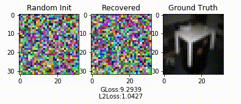

Note: We provide
for quick reproduction!
Exchanging gradients is a widely used method in modern multi-node machine learning system (e.g., distributed training, collaborative learning). For a long time, people believed that gradients are safe to share: i.e., the training data will not be leaked by gradient exchange. However, we show that it is possible to obtain the private training data from the publicly shared gradients. We name this leakage as Deep Leakage from Gradients and empirically validate the effectiveness on both computer vision and natural language processing tasks. Experimental results show that our attack is much stronger than previous approaches: the recovery is pixel-wise accurate for images and token-wise matching for texts. We want to raise people's awareness to rethink the gradient's safety. Finally, we discuss several possible strategies to prevent such deep leakage. The most effective defense method is gradient pruning. $$ \max(2 T_{\text{latency}} + T_{\text{sync}} - d \times T_{\text{computation}}, 0) / T_{\text{compute}} $$ $$ \frac{1}{N} \sum_{n=0}^{N-1} \mathbb{E} [ \Vert \nabla f(\overline{w}_{n}) \Vert ^2 ] = O \left (\frac{\Delta+\sigma^2}{\sqrt{JN}}+ \frac{Jd^2}{N} \right ). $$

Deep Leakage by Gradient Matching

The core algorithm is to match the gradients between dummy data and real data. It can be implemented in less than 20 lines in PyTorch!
def deep_leakage_from_gradients(model, origin_grad): dummy_data = torch.randn(origin_data.size()) dummy_label = torch.randn(dummy_label.size()) optimizer = torch.optim.LBFGS([dummy_data, dummy_label] ) for iters in range(300): def closure(): optimizer.zero_grad() dummy_pred = model(dummy_data) dummy_loss = criterion(dummy_pred, dummy_label) dummy_grad = grad(dummy_loss, model.parameters(), create_graph=True) grad_diff = sum(((dummy_grad - origin_grad) ** 2).sum() \ for dummy_g, origin_g in zip(dummy_grad, origin_grad)) grad_diff.backward() return grad_diff optimizer.step(closure) return dummy_data, dummy_label
Results on Image

Results on Language Model
Introduction Video
Citation
@inproceedings{zhu2019dlg,
title = {Deep Leakage from Gradients},
author = {Zhu, Ligeng and Liu, Zhijian and and Han, Song},
booktitle = {Annual Conference on Neural Information Processing Systems (NeurIPS)},
year = {2019}
}
Acknowledgments: We sincerely thank MIT Quest for Intelligence, MIT-IBM Watson AI Lab, Samsung, Facebook and SONY for supporting this research. We also thank John Cohn for valuable discussion.